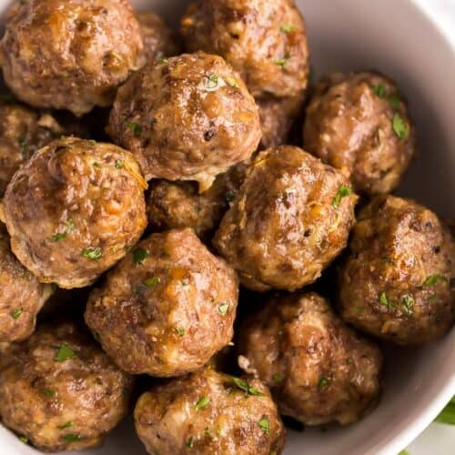

Worlds Best Meatballs

Truly the worlds best meatball recipes you can find on the internet.
Searching for the best meatball recipe ever? You've come to the right place. These meatballs are tender, juicy, and full of flavor.
Make our most popular meatball recipe today to find out what all the fuss is about!
Ingredients
- 1 pound ground beef
- 1/2 pound ground veal
- 1/2 pound ground pork
- 2 cloves minced garlic
- 1 cup of freshly grated Romano cheese
- 2 eggs
- 1 1/2 tablespoons chopped Italian flat leaf parsley
- Salt and ground black pepper to taste
- 2 cups stale crumbled Italian bread
- 1 1/2 cups lukewarm water
- 1 cup olive oil
Directions
- Combine beef, veal, and pork in a large bowl. Mix in cheese, eggs, garlic, parsley, salt, and pepper.
- Add bread crumbs and slowly mix in water, 1/2 cup at a time, until mixture is moist but still holds its shape (I usually use about 1 1/4 cups of water); shape into meatballs.
- Heat olive oil in a large skillet; add meatballs in batches and cook until browned on all sides, slightly crisp, and cooked through, about 10 to 15 minutes. Drain on paper towels.